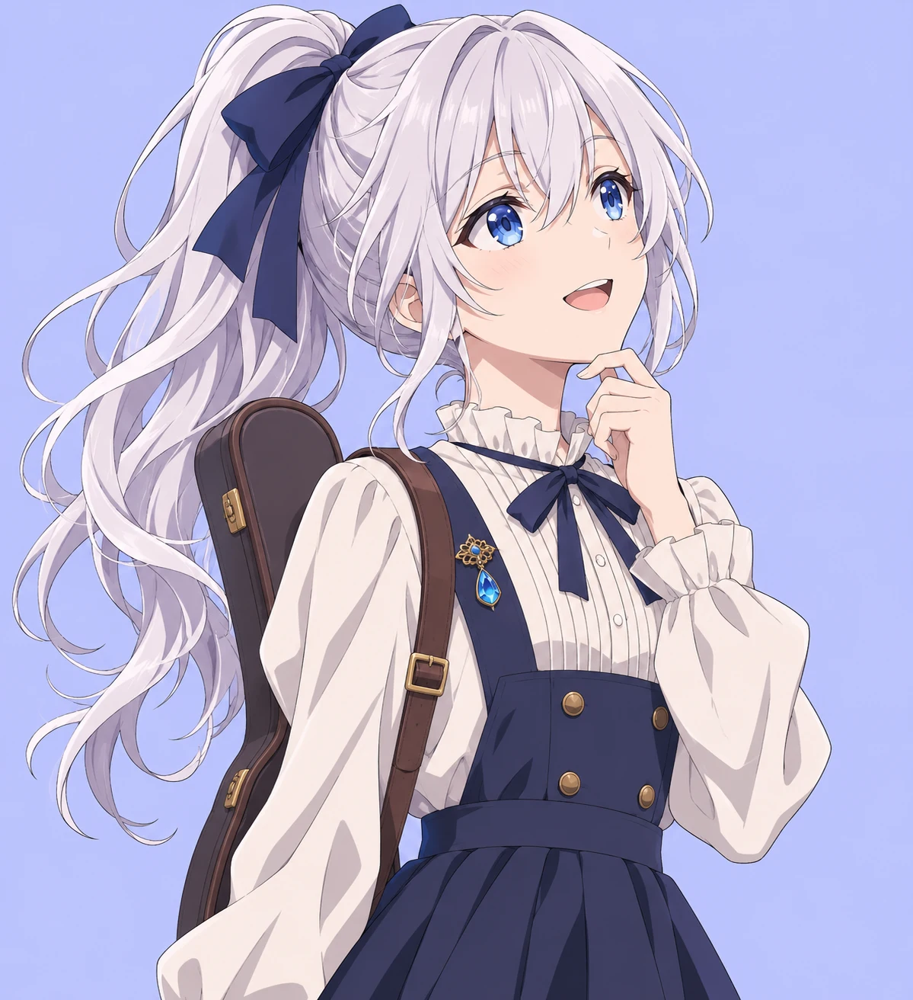

<!doctype html>
<html lang="zh-CN">
  <meta charset="utf-8" /><meta
    name="viewport"
    content="width=device-width,initial-scale=1"
  />
  <title>Sora 的设定画集</title>
  <link rel="stylesheet" href="gallery.css" />
  <header><a href="../../">← 主页</a><span>Sora Atelier</span></header>
  <main>
    <section class="cover">
      
      <div>
        <h1>Sora<span>角色设定画集</span></h1>
        <p>
          银白色的马尾，清蓝的眼睛。见面时会先挥手，调弦时却安静得能听见每根弦的余音。
        </p>
        <dl>
          <dt>身高</dt>
          <dd>159 cm</dd>
          <dt>乐器</dt>
          <dd>吉他 · 钢琴</dd>
        </dl>
      </div>
    </section>
    <nav id="filters" aria-label="按画风筛选"></nav>
    <div id="works"></div>
  </main>
  <dialog aria-labelledby="caption">
    <button id="close" aria-label="关闭大图">×</button>
    <footer>
      <button id="prev" aria-label="上一张">←</button><span id="caption"></span
      ><button id="next" aria-label="下一张">→</button>
    </footer>
  </dialog>
  <script src="catalog.js"></script>
  <script src="gallery.js"></script>
</html>
